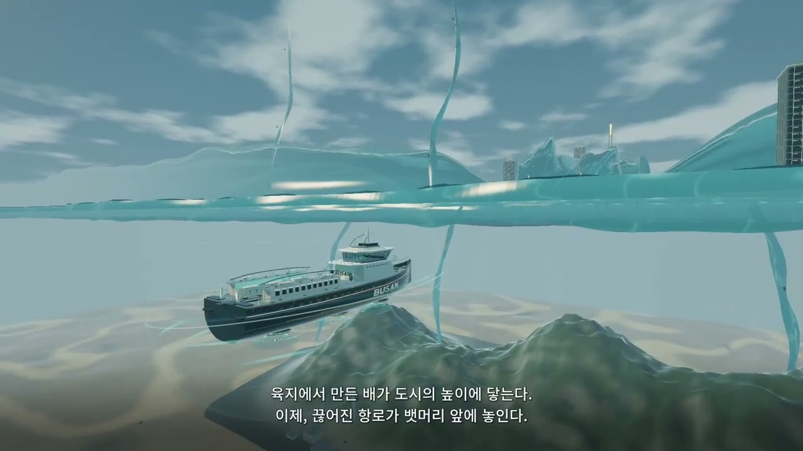

SF · 시네마틱
하늘로 올라간 바다와 두 세계를 잇는 역. 부산에서 출발한 상상의 세계.
부산의 콘텐츠 투어리즘.
AI를 활용해 부산의 장소와 문화를 새로운 시선으로 재해석합니다. 캐릭터 VLOG부터 팬메이드·오마주, 장르를 넘나드는 창작 콘텐츠를 선보입니다.

SF BUSAN / EP. 02실제 장소에서 출발해 상상의 장면으로 확장합니다. 작품마다 다른 인물과 시각 언어로 부산을 바라봅니다.
하늘로 올라간 바다와 두 세계를 잇는 역. 부산에서 출발한 상상의 세계.
토마토의 영화제 나들이부터 아기 용의 여행까지. 장소를 누군가의 이야기로.
스테인드글라스, 풍속화, 베이커리. 익숙한 풍경을 새로운 질감으로.
바다와 커피 문화에서 얻은 영감을 가상의 공간과 분위기로 기록합니다.
실제 채널에 공개된 영상 중 선정한 작품입니다. 썸네일을 누르면 YouTube에서 열립니다.
작품을 불러오고 있습니다.
선정 기준: 2026년 10월 26일 공개 채널 확인. 위 분류는 포트폴리오를 위한 편집 분류입니다. 영상 속 공간·인물·브랜드에는 AI 창작과 가상 설정이 포함되며, 팬메이드 작업은 공식 협업이나 의뢰를 뜻하지 않습니다.
역사·로컬·예술의 세 시선으로 부산을 읽고, 걷고, 기록하는 여행 경험 편집 서비스.
서비스 소개 보기 →Instagram·Facebook·YouTube의 수집된 성과를 보고, 다음 콘텐츠를 위한 단서를 찾습니다.
SNS 대시보드 보기 →